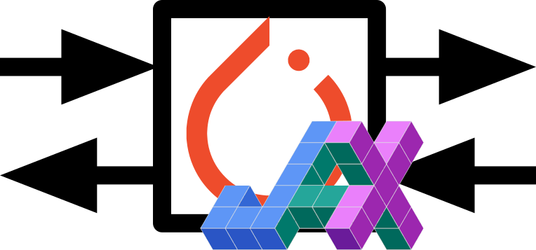

Welcome to torch2jax

This package is designed to facilitate no-copy PyTorch calling from JAX under both eager execution and JIT. It leverages the JAX C++ extension interface, enabling operations on both CPU and GPU platforms. Moreover, it allows for executing arbitrary PyTorch code from JAX under eager execution and JIT.
The intended application is efficiently running existing PyTorch code (like ML models) in JAX applications with very low overhead.
This project was inspired by the jax2torch repository https://github.com/lucidrains/jax2torch and has been made possible due to an amazing tutorial on extending JAX https://github.com/dfm/extending-jax. Comprehensive JAX documentation https://github.com/google/jax also significantly contributed to this work.
Although I am unsure this functionality could be achieved without C++/CUDA, the C++ compilation is efficiently done using PyTorch's portable CUDA & C++ compilation features, requiring minimal configuration.
Tested and developed with (python==3.9.13, torch==2.0.1 jax==0.4.8)
Install
$ pip install git+https://github.com/rdyro/torch2jax.git
Usage
With a single output
import torch
import jax
from jax import numpy as jnp
from torch2jax import torch2jax # this converts a Python function to JAX
from torch2jax import Size # this is torch.Size, a tuple-like shape representation
def torch_fn(a, b):
return a + b
shape = (10, 2)
a, b = torch.randn(shape), torch.randn(shape)
jax_fn = torch2jax(torch_fn, a, b) # without output_shapes, torch_fn **will be evaluated once**
jax_fn = torch2jax(torch_fn, a, b, output_shapes=Size(a.shape)) # torch_fn will NOT be evaluated
prngkey = jax.random.PRNGKey(0)
device = jax.devices("cuda")[0] # both CPU and CUDA are supported
a = jax.device_put(jax.random.normal(prngkey, shape), device)
b = jax.device_put(jax.random.normal(prngkey, shape), device)
# call the no-copy torch function
out = jax_fn(a, b)
# call the no-copy torch function **under JIT**
out = jax.jit(jax_fn)(a, b)
With a multiple outputs
def torch_fn(a, b):
layer = torch.nn.Linear(2, 20).to(a)
return a + b, torch.norm(a), layer(a * b)
shape = (10, 2)
a, b = torch.randn(shape), torch.randn(shape)
jax_fn = torch2jax(torch_fn, a, b) # with example argumetns
prngkey = jax.random.PRNGKey(0)
device = jax.devices("cuda")[0]
a = jax.device_put(jax.random.normal(prngkey, shape), device)
b = jax.device_put(jax.random.normal(prngkey, shape), device)
# call the no-copy torch function
x, y, z = jax_fn(a, b)
# call the no-copy torch function **under JIT**
x, y, z = jax.jit(jax_fn)(a, b)
Automatically defining gradients
Automatic reverse-mode gradient definitions are now supported for wrapped
pytorch functions with the method torch2jax_with_vjp
import torch
import jax
from jax import numpy as jnp
import numpy as np
from torch2jax import torch2jax_with_vjp
def torch_fn(a, b):
return torch.nn.MSELoss()(a, b)
shape = (6,)
xt, yt = torch.randn(shape), torch.randn(shape)
# `depth` determines how many times the function can be differentiated
jax_fn = torch2jax_with_vjp(torch_fn, xt, yt, depth=2)
# we can now differentiate the function (derivatives are taken using PyTorch autodiff)
g_fn = jax.grad(jax_fn, argnums=(0, 1))
x, y = jnp.array(np.random.randn(*shape)), jnp.array(np.random.randn(*shape))
print(g_fn(x, y))
# JIT works too
print(jax.jit(g_fn)(x, y))
Caveats:
jax.hessian(f)will not work sincetorch2jaxuses forward differentiation, but the same functionality can be achieved usingjax.jacobian(jax.jacobian(f))- input shapes are fixed for one wrapped function and cannot change, use
torch2jax_with_vjp/torch2jaxagain if you need to alter the input shapes - in line with JAX philosphy, PyTorch functions must be non-mutable, torch.func has a good description of how to convert e.g., PyTorch models, to non-mutable formulation
Timing Comparison vs pure_callback
This package achieves a much better performance when calling PyTorch code from JAX because it does not copy its input arguments and does not move CUDA data off the GPU.

Current Limitations of torch2jax
- compilation happens on module import and can take 1-2 minutes (it will be cached afterwards)
- in the Pytorch function all arguments must be tensors, all outputs must be tensors
- all arguments must be on the same device and of the same datatype, either float32 or float64
- an input/output shape (e.g.
output_shapes=kw argument) representations (for flexibility in input and output structure) must be wrapped intorch.Sizeorjax.ShapeDtypeStruct - the current implementation does not support batching, that's on the roadmap
- the current implementation does not define the VJP rule, in current design, this has to be done in Python